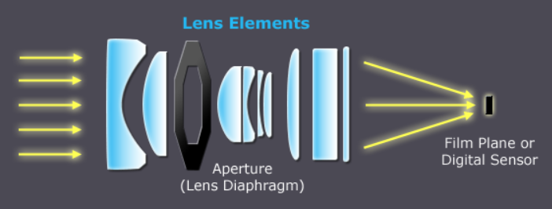
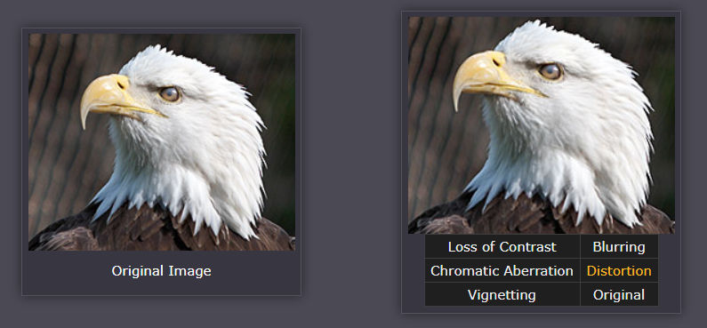

Understanding camera lenses
了解相机镜头有助于为数码摄影增添更多创意选择，为场景选择合适的镜头的过程，是在成本、尺寸、重量、镜头速度和图像质量之间的折衷。本教程旨在提供对图像质量、焦距、透视、主摄&变焦镜头以及光圈或f值等相关概念进行介绍。
Lens elements & image quality
除了最简单的相机之外，所有相机都包含实际上由几个“镜头元件”组成的镜头。 这些元件中的每一个都引导光线路径在数字传感器上尽可能准确地重建图像。 目标是尽量减少像差，同时仍然使用最少和最便宜的组件。

当图像中一个点在通过镜头后未转换回同样点时会发生光学像差，导致图像模糊、对比度降低或颜色不对齐（色差）。镜头也可能发生不均匀的、径向降低的图像渐晕或失真。将鼠标移到下面的每个选项上，看看这些在极端情况下如何影响图像质量：

任何镜头都存在上述问题，在下面内容中，当一个镜头比另一个的光学质量更低时，就会表现为上述artifacts的某种组合。与取景主题相关，有些artifacts不会那么让人难以接受。